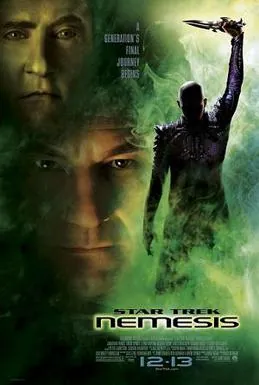

The genetics
Cloning is the film's central device. Shinzon is a genetic copy of Picard grown by the Romulans for espionage, and the story uses him to explore nature against nurture: sharing Picard's genome, he was shaped by abandonment and slavery into a very different man, and much of the drama turns on whether Picard, in his place, would have become the same. The cloners themselves are an unseen Romulan intelligence programme that treats the boy as a disposable tool. A further plot point is that Shinzon's cloning was flawed, leaving him with a fatal degeneration that only Picard's blood can stop. In real terms, a clone is simply a delayed identical twin, and the film's attention to the role of upbringing reflects that well.
How genetics is portrayed
- Overall portrayal of genetics
- negative Cloning is an intelligence ploy that treats a child as a disposable tool and yields a flawed, dying copy turned villain; the film's nature-versus-nurture argument blames the abuse rather than the genome, but the genetic programme itself remains sinister.
- Outcome of the genetic intervention
- negative The cloning produces Shinzon, an abused, dying man who seizes power, kidnaps Picard for his blood and tries to wipe out life on Earth, leading to his death and Data's sacrifice.
- Romulan government cloning programme
- villain Aim: military (negative). In the backstory the Romulans clone Picard, engineering accelerated ageing, to plant a spy in Starfleet, then abandon the child to die in the Reman mines; they appear only as the callous makers of the villain.
- Dr. Beverly Crusher
- neutral Aim: benevolent (positive). Crusher analyses Shinzon's blood, confirms he is Picard's clone and finds the engineered defect that is killing him, routine medical work that reveals his motive.
The story
After the Romulan Senate is wiped out by a weapon planted during a debate, the Reman rebel leader Shinzon seizes power. The Enterprise, carrying Captain Picard and his crew, recovers B-4, a prototype android resembling Data, and is sent to Romulus because Shinzon claims to want peace with the Federation. There Picard learns that Shinzon is his clone, created by the Romulans to replace him as a spy within Starfleet. The plan was abandoned and the child was sent to the mines of Remus to die, but he rose to lead the Remans and built the warship Scimitar, armed with thalaron radiation. Dr. Crusher discovers that Shinzon is dying because of the way he was cloned and that only a transfusion of Picard's blood can save him. Shinzon kidnaps Picard and plans to use his weapon against Earth. Picard kills Shinzon aboard the Scimitar, and Data sacrifices himself to destroy it.